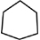

Pactum De Singularis Caelum
Covenant of One Heaven
 Principles
Principles
Article 25 - UCADIA
UCADIA represents a spiritual and legal presence, a structure of knowledge and a language of pure symbolic semantic meaning. UCADIA is the founding energy upon which these words are based.
UCADIA stands for Unique Collective Awareness of DIA.
DIA are pure symbolic representations of meaning, the units of meaning upon which the UCADIAN language of pure symbolic semantic meaning is constructed. Hence, DIA is equivalent to defining "rules"
Unique Collective Awareness means the unique collection of all things, a pure concept defined as the ultimate paradox, the absolute.
Therefore, UCADIA is a technical definition of the Universe whereby all things are part of the Divine Creator. Therefore, UCADIA is also a more perfect equivalent to the word God, The Almighty, The One and Only and The Absolute.
Ucadia defines all knowledge that exists and will exist into 10 numbers, 10 categories and 10 standard symbolic shapes. This is called the wisdom class.
| Absolute | |
| Universal | |
| Relationships and measurement | |
| Elements | |
| Galactic and intergalactic objects | |
| Stellar and interstellar objects | |
| Planet objects | |
| Life | |
 |
Self aware life |
| Human life |
Like all languages, UCADIA is constructed from building block components. The primary components of UCADIA are objects and concepts (called DA) and their associated attributes that modify them (called MODIFIERS), bridge associations between concepts and objects (called RELATORS), associations that bridge between DA and MODIFIERS and/or RELATORS (called ASSOCIATORS) and tense/perspective (called TENSORS).
All these components are used to construct a rich possible variety of symbol sentences (called DIA) according to some essential rules of construction (DIA rules of CONSTRUCTION).
However, UCADIA is also much more than just different ways to describe things, it is a language built from a founding principle that shape denotes meaning and classification in itself.
Shape of objects and concepts in UCADIA
The concept is that knowledge and shape may represent within itself knowledge capable of transmitting as much if not more than the individual symbols themselves.
In nature, a mountain by its shape tell us the journey of its rocks and trees and edges. So too, does a river, by its course and its banks, the history of floods, of drought. Thus, UCADIA enables one to view knowledge in its structure.
The concept is that knowledge and shape may represent within itself knowledge capable of transmitting as much if not more than the individual symbols themselves.
Complete classification structure of UCADIA
A further point that makes UCADIA unique is the way in which groups of symbols are categorized both in terms of their purpose and category of meaning.
The following outlines the categorization of groups of symbols by their purpose as well as their category by common meaning
By purpose
UCADIA is divided into six levels of purpose, beginning with the DA- the foundation symbol of an object or concept.
| ucadia | the ultimate concept from which all concepts are derived | 1 |
| model | theory constructed from 2 or more IDEALS | 1,000+ |
| ideal | concept constructed of 2 or more IDEAS | 10,000+ |
| idea | argument constructed from 2 or more DIA | 1 million + |
| dia | statement constructed of two or more DA's | 100,000+ |
| da | symbol (a thing with meaning and features) | 20,000+ |
By category of common meaning
UCADIA is also divided into six levels of categorization of common meaning, beginning with ALL, then ten symbols down to the DAT classes of DA.
| ALL | class of all wisdom | 1 |
| wisdom | class of MODELS | 10 |
| knosis | class of IDEALS | 26 ( x 10 = 260) |
| datum | class of IDEAS | 8 ( x 26 X 10 = 2,080) |
| data | class of DIA | 12 (8 x 26 X 10 = 24,960) |
| dat | class of DA | 36 ( 12 x 8 x 26 X 10 = 898,560) |
By the authority of this Covenant, the UCADIAN symbolic language is the official language for all official documents, titles, deeds, warrants and objects authorized to be created by its articles.